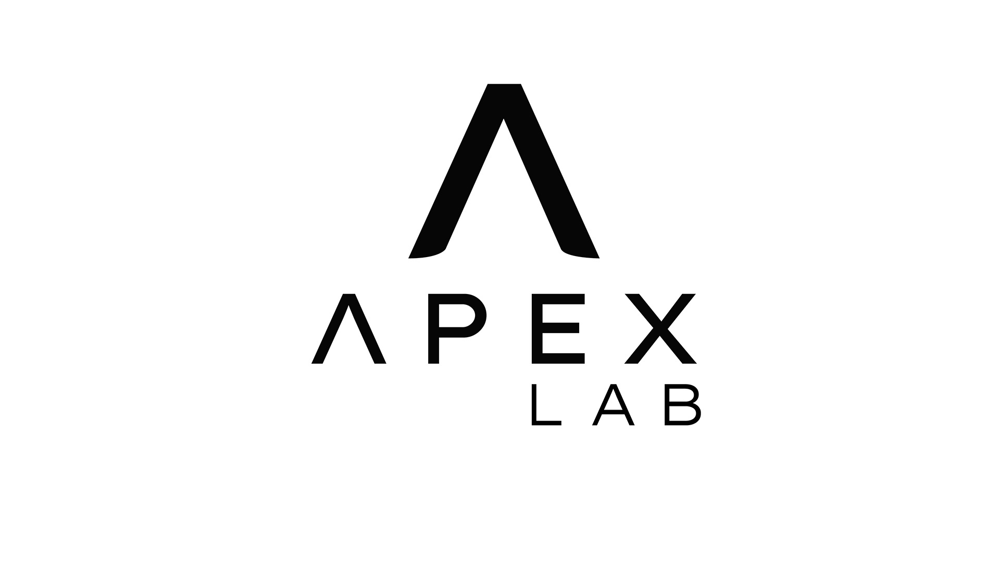
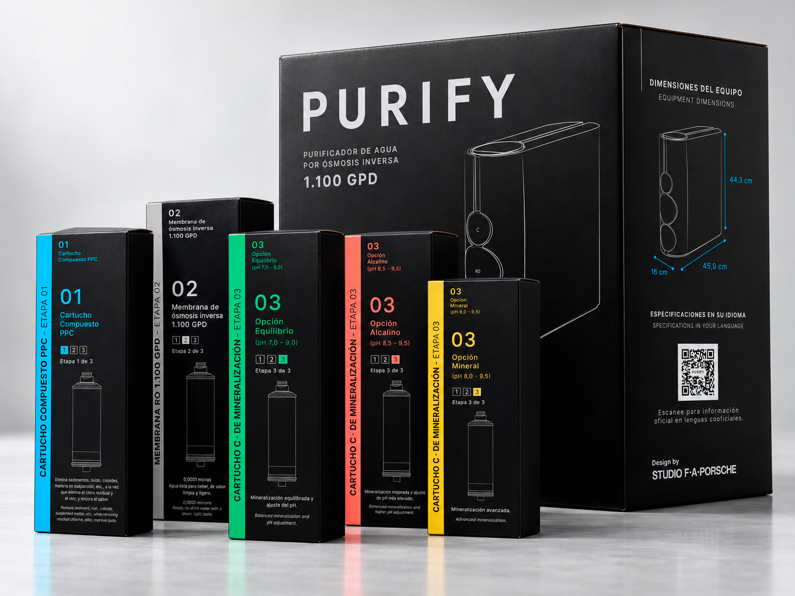
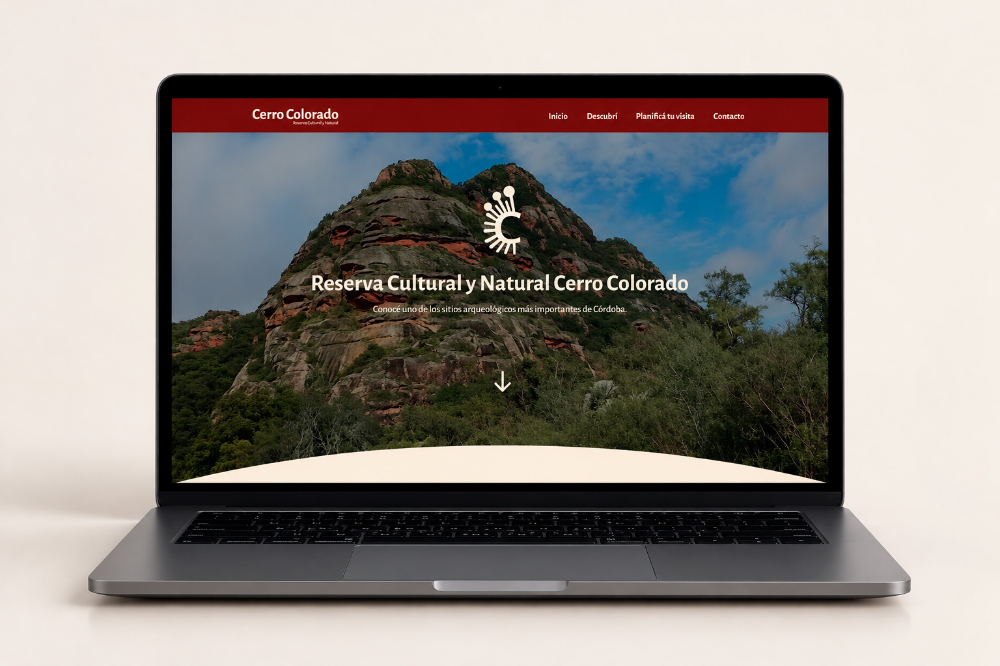
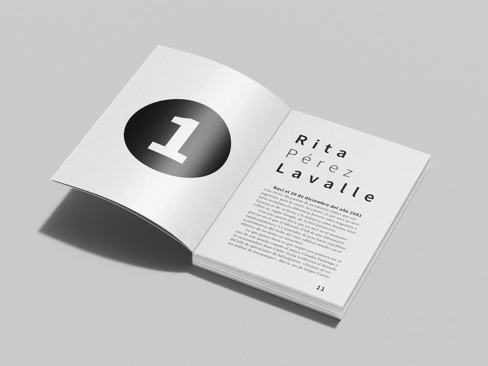
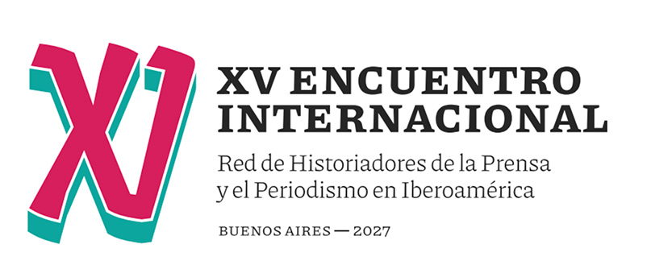
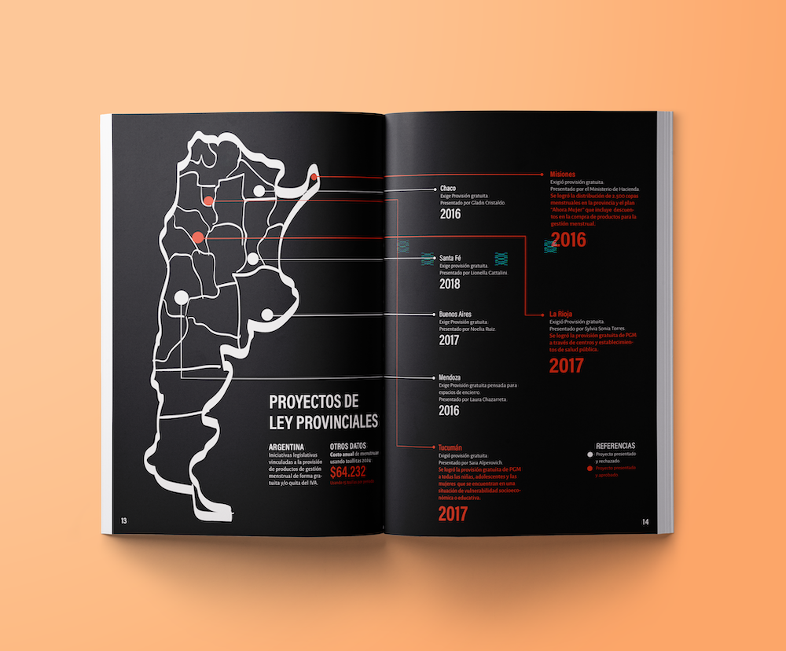

Investigar
Analizar el contexto, identificar necesidades y encontrar oportunidades.
PORTFOLIO / 2026
Hola! Soy Luli, acá vas a encontrar identidad visual, packaging y experiencias
digitales.
Diseño soluciones que conectan conceptos, marcas y personas.
MI ENFOQUE
Entiendo el diseño como un proceso que articula investigación, estrategia y decisiones visuales para construir soluciones claras, coherentes y significativas.
Analizar el contexto, identificar necesidades y encontrar oportunidades.
Transformar la investigación en ideas y decisiones de diseño fundamentadas.
Desarrollar y ajustar soluciones visuales hasta lograr un resultado coherente y funcional.
ÁREAS DE TRABAJO

Desarrollo de marcas y sistemas visuales que construyen identidad y comunican con coherencia.

Diseño de envases que integran identidad, información y funcionalidad en una experiencia visual coherente.

Diseño de interfaces y experiencias digitales que priorizan la claridad, la funcionalidad y la navegación intuitiva.
EXPLORACIÓN VISUAL
Bocetos, pruebas tipográficas, paletas y composiciones. Un registro de ideas que forman parte de mi proceso de diseño.



CONTACTO
¿Tenés un proyecto en mente? Me encantaría conocer tu idea y explorar cómo podemos trabajar juntxs.